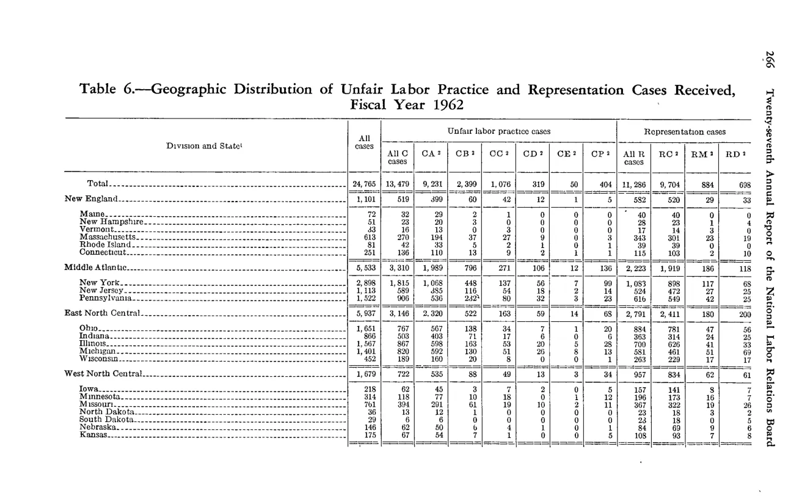
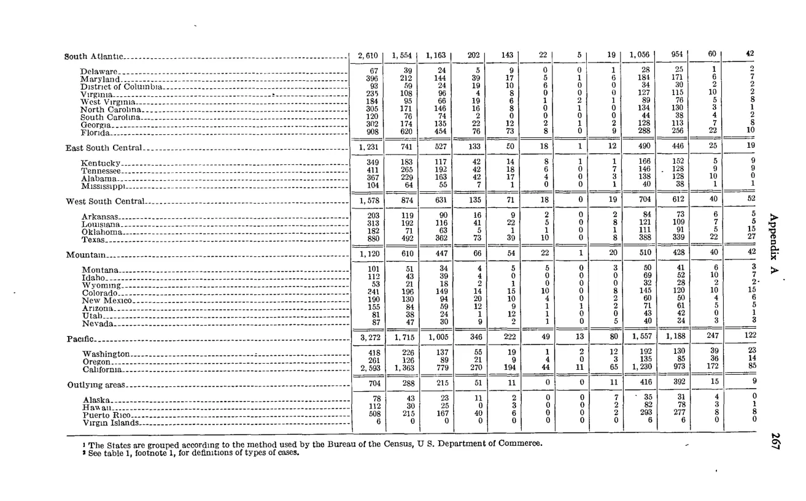

NLRB Stats Archive › Annual Reports › FY1962 › Geographic distribution of cases received
Stitched from 2 consecutive pages (spans pp. 280–281). Combined rows under the first part’s headers; source images for every part are shown below. component ids
| Division and State | All cases | Unfair labor practice cases — All C cases | Unfair labor practice cases — CA | Unfair labor practice cases — CB | Unfair labor practice cases — CC | Unfair labor practice cases — CD | Unfair labor practice cases — CE | Unfair labor practice cases — CP | Representation cases — All R cases | Representation cases — RC | Representation cases — RM | Representation cases — RD |
|---|---|---|---|---|---|---|---|---|---|---|---|---|
| Total | 24,765 | 13,479 | 9,233 | 2,389 | 1,076 | 319 | 50 | 404 | 11,286 | 9,704 | 884 | 698 |
| New England — total | 1,101 | 519 | 499 | 60 | 42 | 12 | 1 | 5 | 582 | 529 | 40 | 13 |
| Middle Atlantic — total | 5,533 | 3,310 | 1,989 | 796 | 271 | 106 | 12 | 136 | 2,223 | 1,919 | 186 | 118 |
| East North Central — total | 5,107 | 3,108 | 2,329 | 586 | 138 | 34 | 7 | 65 | 2,791 | 2,411 | 182 | 203 |
| West North Central — total | 1,679 | 722 | 535 | 88 | 49 | 13 | 3 | 34 | 957 | 834 | 62 | 61 |
| [Additional Division rows below — South Atlantic, East South Central, West South Central, Mountain, Pacific, Outlying areas — captured at top-level only on continuation page] | ||||||||||||
| South Atlantic — total | 2,610 | 1,554 | 1,163 | 202 | 143 | 22 | 5 | 19 | 1,056 | 954 | 60 | 42 |
| East South Central — total | 1,231 | 741 | 527 | 133 | 70 | 18 | 1 | 12 | 490 | 446 | 25 | 19 |
| West South Central — total | 1,578 | 874 | 631 | 135 | 71 | 18 | 0 | 19 | 704 | 612 | 40 | 52 |
| Mountain — total | 1,120 | 610 | 447 | 66 | 54 | 22 | 1 | 20 | 510 | 428 | 40 | 42 |
| Pacific — total | 3,272 | 1,715 | 1,005 | 346 | 222 | 49 | 13 | 80 | 1,557 | 1,188 | 247 | 122 |
| Outlying areas — total | 704 | 288 | 215 | 51 | 11 | 1 | 1 | 11 | 416 | 392 | 17 | 7 |


Source data: U.S. NLRB Annual Reports (public domain). Reconstruction by NLRB Stats Archive. Verify figures against the source scan. Updated June 2026. · About